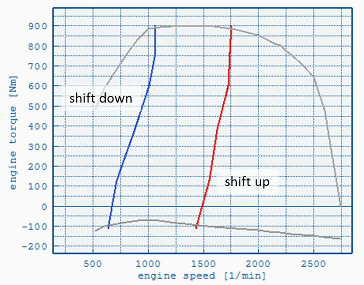
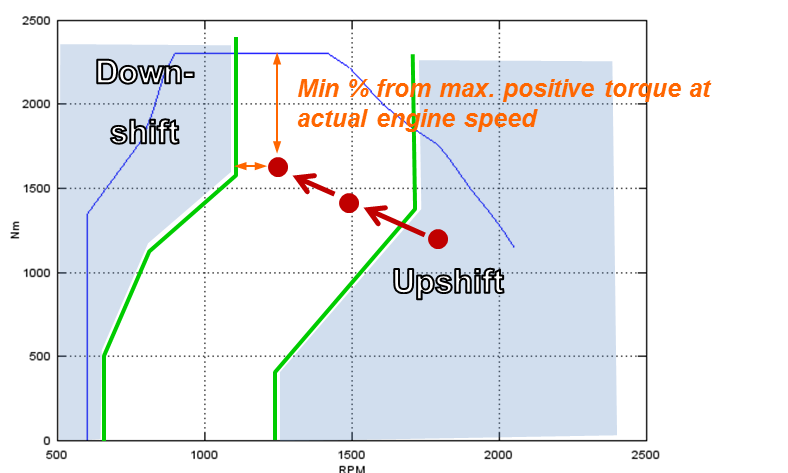
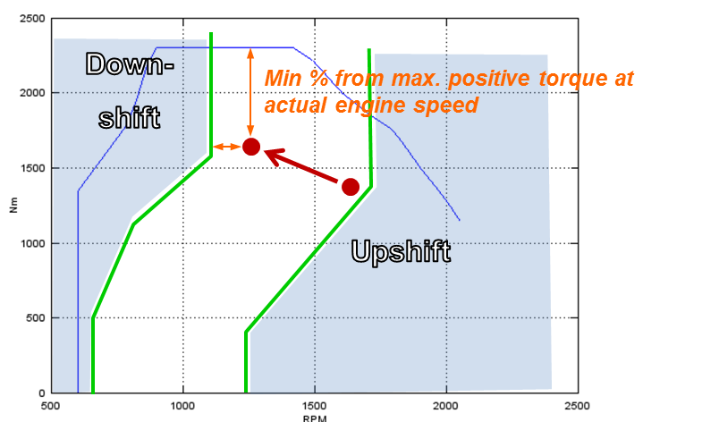

The Gear Shift Model is based on shift
curves that define the engine speed for up- and down- shifting as a
function of engine torque. As soon as the engine operation point passes
one of the shift curves a gear change is initiated.

Example shift polygons
- Down-shift:
- As soon as the current engine speed falls below the down-shift cuve a down-shift is initiated
- Up-shift:
- MT and AMT transmissions: Up-shift is initiated when the current engine speed is above the up-shift curve
- AT transmissions: Up-shift is initiated when the next-gear engine speed is above the up-shift curve
The shift polygons are saved in the
Shift Polygons Input File (.vgbs) and have to be added to the
Gearbox File when not in
Declaration Mode.
In
Declaration Mode the shift
polygons are generated automatically based on the full load curve of
each gear. If the engine's full load torque is lower than the gear's,
then the engine's full load is used to prevent unreasonable shifting
with small engines.
In the Gearbox File two additional parameters are defined:
- Torque Reserve [%] - Required
for the "Early Upshift" and "Skip
Gears" options, see below.
- Minimum shift time [s] - Limits
the time between two gear shifts in whole seconds. This rule will be
ignored if rpms are too high or too low. Note that high values may
cause high rpms during acceleration.
Gear Skipping
Gear Skipping can be enabled in the
Gearbox File. By default it is enabled for AMT and MT.
Whenever
a gear change is initiated (by crossing the up- or down-shift line)
VECTO may skip one or several gears as long as the required torque reserve is provided.

Early Upshift
Early Upshift can be enabled in the
Gearbox File (Allow shift-up inside polygons). By default it is enabled for AMT only.
If the next higher gear
provides the required torque reserve
and it's rpm is still above down-shift-rpm VECTO will shift up.
